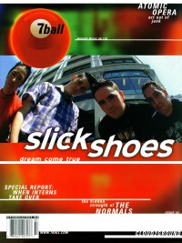

Slick Shoes
|  |
| September 2000 7ball |
Media coverage:
- Sep 1997 in HM "Getting 2 Know Slick Shoes", by Kim Philpott
- Nov 1997 in HM "Concert Review: Slick Shoes, Ninety Pound Wuss, Ghoti Hook", by Daniel Tucek
- Jul 1998 in FUEL "Slick As Snot: The Last Round of Punk Rock", by Chris Estey
- Sep 1998 in HM "Slick Shoes"
- Jan 1999 in 7ball "Bankshots: Slick Shoes", by J J Cunningham
- Jul 2000 in HM "Slick Again", by Dan MacIntosh
- Sep 2000 in HM "Poster: Slick Shoes"
- Sep 2000 in 7ball "A New Day", by Dan MacIntosh
- Nov 2001 in HM "Hardnews: Slick Shoes", by Joi Lakes
- Mar 2003 in 7ball "Live Music: Chicago, Vic Theatre", by Andy Argyrakis
- Sep 2003 in HM "Slick Shoes", by Jonathan Nolte
- Sep 2003 in CCM "Standing Room Only: Tweeter Center, Tinley Park, IL", by Andy Argyrakis
- Mar 2004 in Relevant "Spotlight: Slick Shoes", by Eric Marrapodi
- Sep 2013 in HM "The Jump: Columns: Snake Man vs Pac Man", by Matt Francis
Albums & reviews:
1997: Slick Shoes EP
1997: Rusty
1997: Rusty
- Jul 1997 in HM, by Brian Vincent McGovern
- Aug 1997 in CBA Marketplace, by Sean Taylor
- Sep 1997 in YouthWorker, by Scott Will
- Sep 1998 in HM, by Brian Vincent McGovern
- Nov 1998 in YouthWorker, by Garth Heckman
- May 2000 in HM, by Gordon (a girl called)
- Sep 2000 in 7ball, by Beth Lewis
- Sep 2000 in YouthWorker, by Dave Urbanski
- May 2002 in HM, by Melba Jackson
- Jul 2002 in YouthWorker, by Dave Urbanski
- Mar 2004 in 7ball, by Dave Urbanski
- Sep 2003 in HM, by Chad Olson
Books about Slick Shoes
- "Slick Shoes" in The Encyclopedia of Contemporary Christian Music (Mark Allan Powell, 2002)

© 2011 CMnexus. Last updated September 2019. Contact: editor -AT- cmnexus -DØT- org About